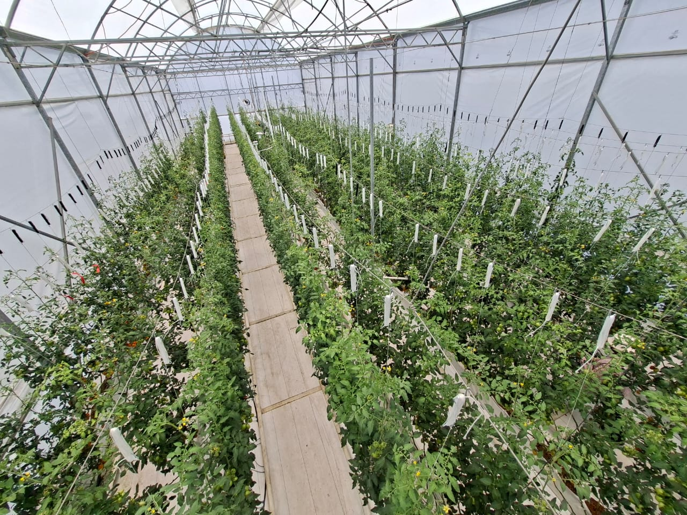
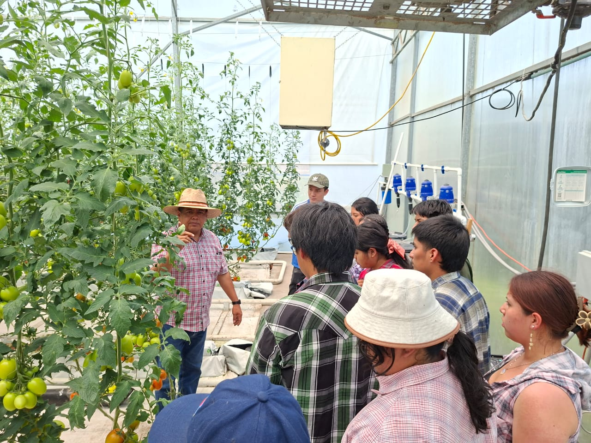

Sensado ambiental
MicroclimaDiseño e integración de redes de medición para observar condiciones críticas en cultivo, laboratorio e infraestructura agrícola.
BIOSISTEMAS EN ACCION
Integramos automatización, sensado y análisis inteligente para estudiar sistemas biológicos con una mirada contemporánea, sostenible y cercana a los retos del territorio.
Visión
Captura, interpretación y seguimiento de variables biológicas en tiempo real.
Automatización
Sistemas instrumentados para operar, medir y decidir con rigor experimental.
Transferencia
Proyectos conectados con formación, colaboración académica y aplicación práctica.

Enfoque del laboratorio
Agricultura inteligente
Datos, automatización y lectura ambiental para sistemas de cultivo más precisos.
Monitoreo sostenible
Soluciones reproducibles para observación, control y toma de decisiones.
Capacidad 01
Visión computacional
Lectura de imágenes, fenotipado y análisis visual para investigación de precisión.
Capacidad 02
Robótica agrícola
Plataformas experimentales para automatizar tareas y validar prototipos en campo o invernadero.
Capacidad 03
Monitoreo inteligente
Sensores, telemetría y tableros de observación para variables ambientales y productivas.
Capacidad 04
Integración de datos
Cruce de señales biológicas y ambientales para interpretar sistemas complejos con claridad.
El laboratorio articula investigación aplicada, infraestructura experimental y colaboración interdisciplinaria para transformar datos biológicos en decisiones útiles.
Diseño e integración de redes de medición para observar condiciones críticas en cultivo, laboratorio e infraestructura agrícola.
Instrumentación de procesos, validación de rutinas y desarrollo de sistemas para ensayos repetibles y confiables.
Procesamiento visual para estudiar crecimiento, respuesta fisiológica y estado de sistemas vegetales con lectura no invasiva.
Evaluación de estrategias para optimizar recursos, mejorar trazabilidad y fortalecer la toma de decisiones basada en evidencia.

Entendemos la automatización como una herramienta para observar mejor, intervenir con criterio y generar conocimiento útil para sistemas biológicos complejos.
Sensado continuo
Captura de señales relevantes para caracterizar ambiente, crecimiento y desempeño operativo.
Modelos útiles
Lectura analítica orientada a interpretación, comparación de escenarios y soporte experimental.
La investigación se materializa en prototipos, pilotos y metodologías que conectan automatización, sostenibilidad y formación avanzada.
Proyecto 01
Integración de sensores y rutinas de adquisición para comparar comportamientos de cultivo bajo diferentes condiciones ambientales.
Proyecto 02
Plataformas de automatización diseñadas para experimentación, validación de tareas y estudio de operaciones repetitivas en entornos agrícolas.
Proyecto 03
Desarrollo de marcos de observación y lectura que ayudan a interpretar fenómenos biológicos con criterios cuantitativos y contexto operativo.
Abrimos el laboratorio a colaboraciones académicas, estancias, proyectos aplicados y circulación de resultados con una mirada rigurosa y humana.
Iniciar contactoColaboración
Espacios para co-diseñar pilotos, metodologías y plataformas experimentales con otros equipos e instituciones.
Formación
Acompañamiento para estudiantes e investigadores interesados en automatización, sensado y análisis de biosistemas.
Publicaciones
Comunicación de hallazgos, protocolos y avances con formatos claros para comunidad académica y socios externos.